Chapter 1 A first plot
(23 November, 2020, 12:40)
1.1 The basics of ggplot2
- Let’s first take a look at some example plots.
- Create a synthetic data set and load the
ggplot2package to access the plotting functionality.
## a a_sq my_group
## 1 1 1 a
## 2 2 4 b
## 3 3 9 a
## 4 4 16 b
## 5 5 25 a
## 6 6 36 b
## 7 7 49 a
## 8 8 64 b
## 9 9 81 a
## 10 10 100 b- Take a look at the following code and the resulting plots. Can you tell what parts that start with geom_… does?
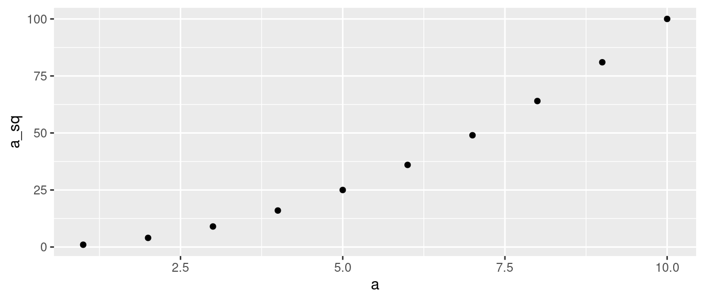
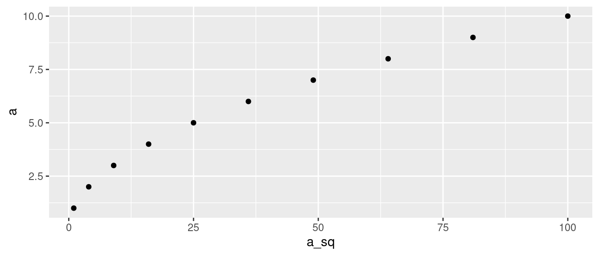
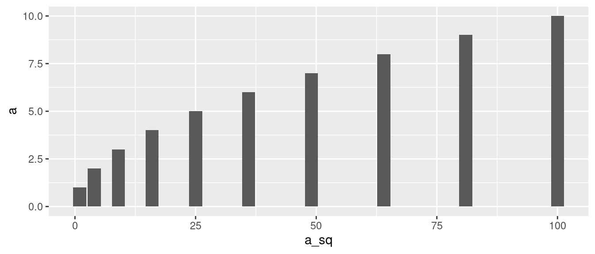
1.2 The basics of ggplot2
So what do those function calls mean?
Let’s take a look at it again: This is pretty much the minimal useful plotting command in R.
- Each ggplot2 plot specification consists, at a minimum, of three parts:
- the data to plot
- an abstract specification of the plot (a rough mapping between variables and axes and other plot elements, such as groups, facets, etc.)
- concrete instructions on what to draw (a specification of the actual visual elements to use)
- They correspond to three parts of the
ggplot()function call- data:
data = df - ‘aesthetic’:
mapping = aes(x, y) - ‘geoms’:
+ geom_point()
- data:
- You can read the instruction below as “Create a plot using the data in data frame df, placing
aon the x-axis anda_sqon the y-axis, and visualize the data using points”. - Keep in mind that information regarding x and y axes is specified within a function called
aes().
- As an aside: A shorter way to write the same code is below, and I’ll mostly use some mixed form.
1.3 Using lines in plots
We already know
geom_pointandgeom_bar. Let’s take a look at some other geoms:.geom_lineconnects the (invisible, in this case) points in the plot.
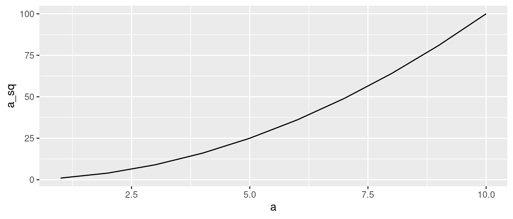
- We can even combine geoms:
- … in fact, as many as we want. But there is no guarantee that the result will look good, or even make sense.
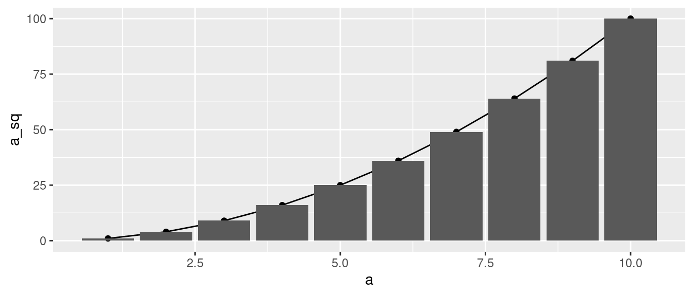
- The order of their specification matter a little bit. Here, the line is plotted over the bars, in contrast to the previous plot.
1.4 Color and fill
- Relationships between two variables are usually easy to visualize, but often there is a third variable.
There are various ways for dealing with it.
Let’s first try using color coding for the third variable.
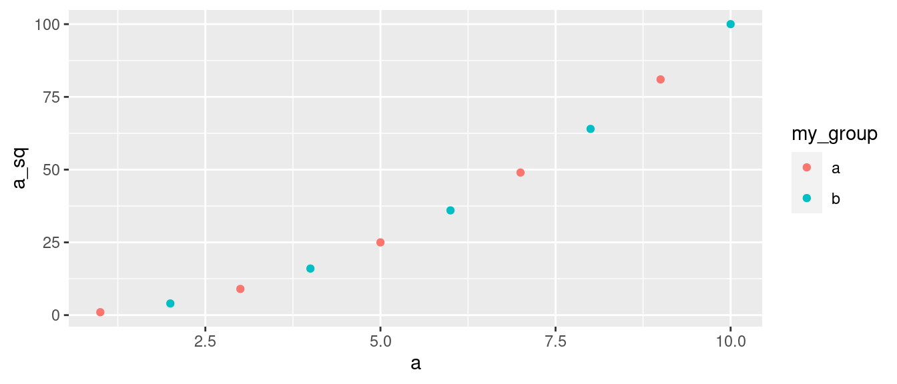
- Let’s try this with bar plots. Not at all what you expected, is it?
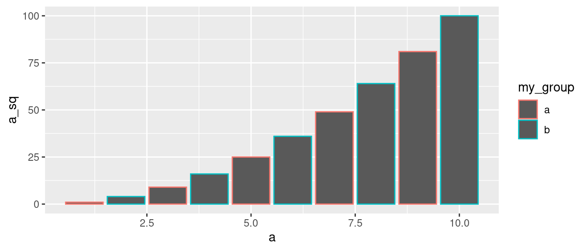
- This is what we wanted. The right argument for bar plots is
fill.
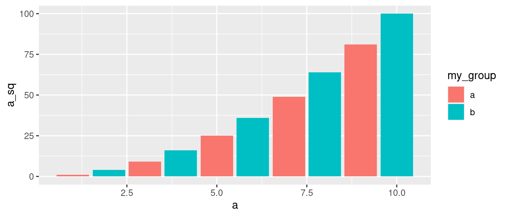
- So why isn’t the aesthetic argument for bar plots not also
color? Because geoms in ggplot2 have
fill(the color of the inner part of the object), and acolor(the color of the line with which they are drawn).- Points don’t have a fill. (Don’t ask me why.)
We can try, if you do not believe me. See that even though we specify a
fillargument for geom_point,colorargument overwrites it.
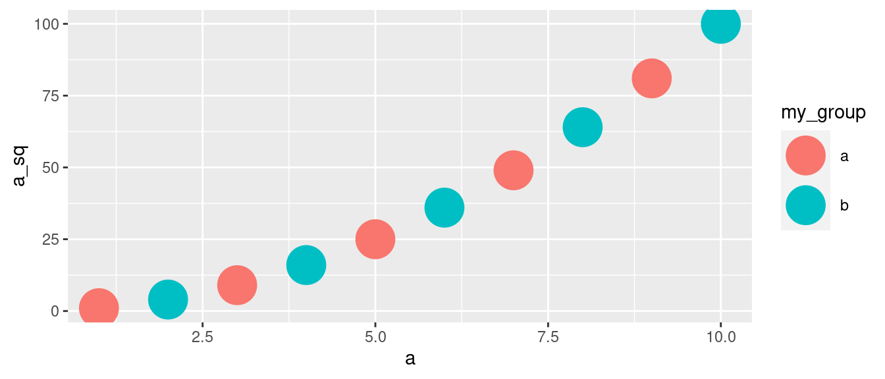 - If points had a fill, we would expect the argument that comes last to overwrite the previous one. - Bars have both fill and color arguments.
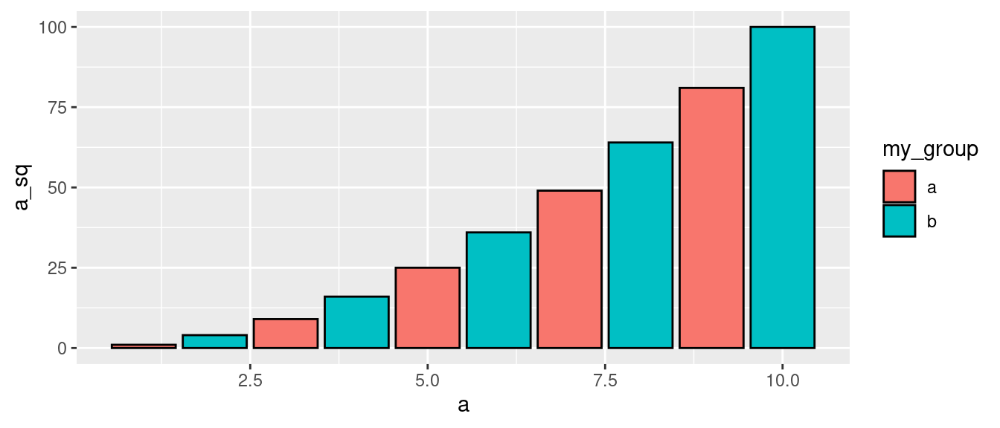
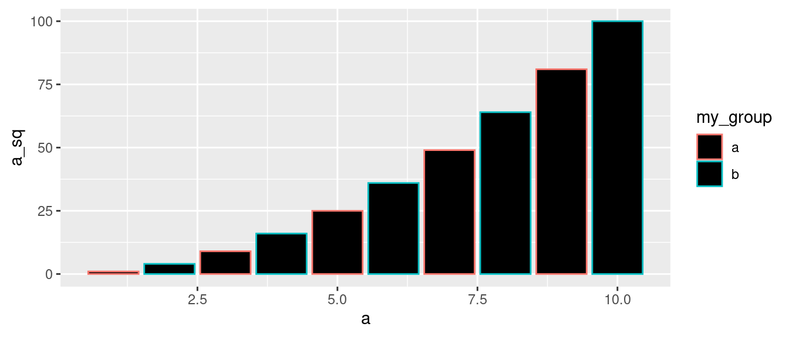
1.5 Grouping and facets
- Color, fill, etc. implicitly group the data set into different subgroups.
- You can see that better if you connect the points by lines.
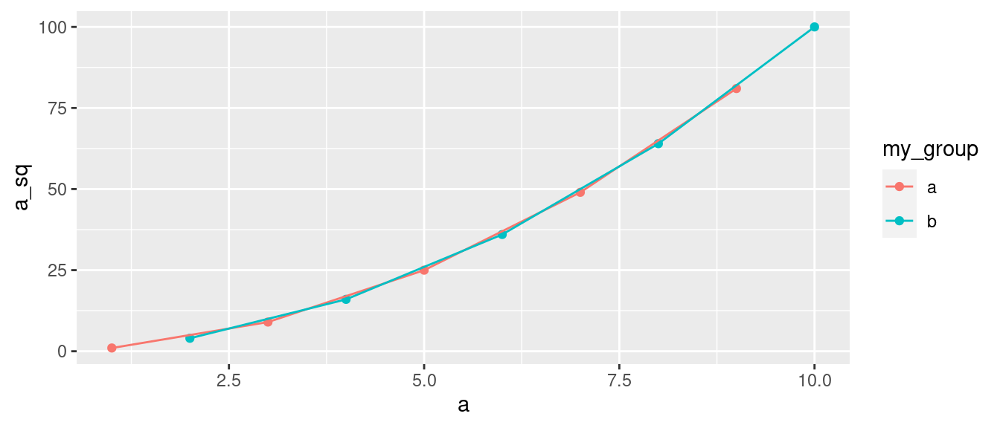
- This can be done explicitly as well.
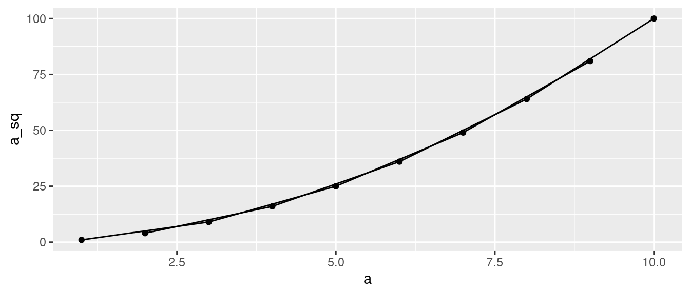
- Now it’s very hard to see which line is which, so let’s at least separate it into different facets (aka ‘panels’).
- We can introduce our new facets with the function
facet_wrap(). Keep in mind that the grouping variable is introduced with~. - The name of the groups can be seen at the top of the plots.
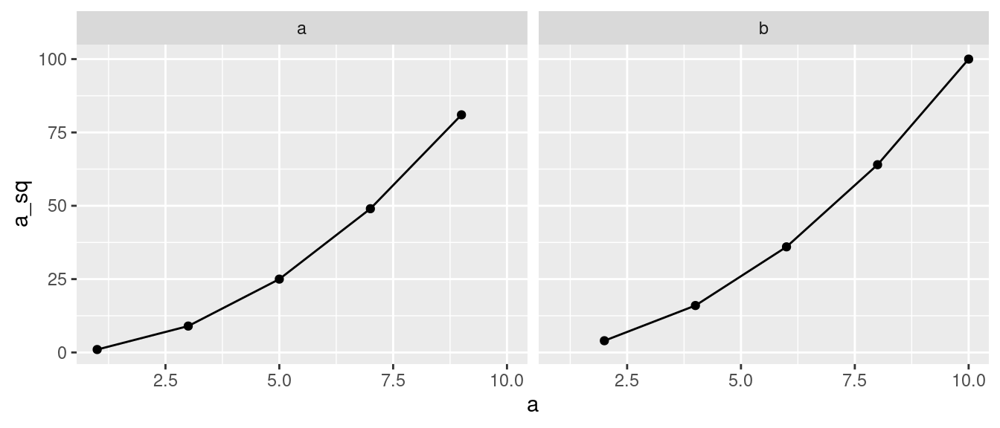